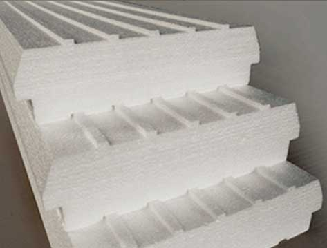

Ladrillo para losa
Los bloques de EPS son ladrillos para techos y entrepisos con viguetas pretensadas. El principio básico de los entrepisos construidos con viguetas y elementos intermedios livianos consiste en sustituir la zona no resistente a la losa por un material estáticamente inactivo (casetón), de menor peso y mayores propiedades aislantes que el hormigón convencional Reduciendo costos y tiempos de mano de obra.
Presentación :
Ancho: 420 mm.
Largo: 1000 mm.
Alto: 100/ 120 mm.
Opcional: dificilmente inflamable.
